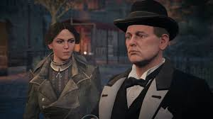

Winston Churchill
Sir Winston Leonard Spencer-Churchill (1874 - 1965) a fost a fost prim-ministru al Regatului Unit din 1940 până în 1945 și din nou din 1951 până în 1955. Alături de ofițer în armata britanică, istoric, scriitor și artist, Churchill este considerat unul dintre cei mai mari și mai influenți lideri politici din război.
Când a început primul război mondial, Churchill era preocupat în primul rând de modul în care Anglia putea contracara amenințarea submarină germană. Cu toate acestea, eșuata campanie Gallipoli l-a determinat să se retragă temporar din politică și să conducă o brigadă pe frontul de vest, înainte de a se întoarce în Marea Britanie.
În 1916, Churchill a solicitat ajutorul Lydiei Frye pentru a dezrădăcina un radio spion german care chema dirijabile lângă Podul Londrei. În ciuda succesului ei în găsirea radioului, un dirijabil, însoțit de mai multe avioane de luptă, a intrat în spațiul aerian al Londrei. Churchill a aranjat apoi o navă cu pistol antiaerian montat pentru a fi folosită de Lydia, pentru a doborî aeronava inamică. După ce a distrus cu succes avioanele inamice, Churchill a cerut încă o dată ajutorul Lydiei, de data aceasta pentru a opri un fanatic grup german din Londra; în schimb, el a promis că va ridica problema votului femeilor odată ce ar fi revenit în parlament. Churchill i-a livrat informații despre spioni lui Frye și a aranjat un raid în ascunzătoarea liderului.